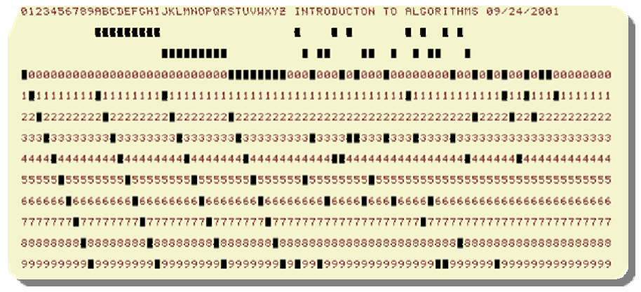
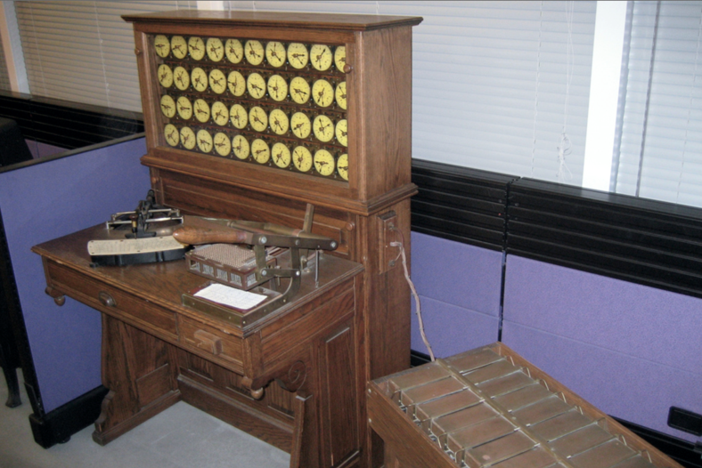

Download DOC, SLIDE, PPTX
Heaps
Heap Data Structure
Heapify
Iterative
Recursive
Extract-Max
Build Heap
Heap Sort
Priority Queues
Linked Lists
Radix Sort
Counting Sort
The smallest element in any subtree is the root element in a min-heap
Min heap: For every node i other than root, A[parent(i)]≤A[i]A[parent(i)] \leq A[i]A[parent(i)]≤A[i]
Computing left child, right child, and parent indices very fast
A[1]A[1]A[1] is always the root element
Array AAA has two attributes:
EXTRACT-MAX(A, n) max = A[1] A[1] = A[n] n = n - 1 HEAPIFY(A, 1,n) return max
HEAPIFY(A, i, n) largest = i if 2i <= n and A[2i] > A[i] then largest = 2i; endif if 2i+1 <= n and A[2i+1] > A[largest] then largest = 2i+1; endif if largest != i then exchange A[i] with A[largest]; HEAPIFY(A, largest, n); endif
Worst case occurs when last row of the subtree SiS_iSi rooted at node iii is half full
T(n)≤T(∣SL(i)∣)+Θ(1)T(n) \leq T(|S_{L(i)}|) + \Theta(1)T(n)≤T(∣SL(i)∣)+Θ(1)
SL(i)S_{L(i)}SL(i) and SR(i)S_{R(i)}SR(i) are complete binary trees of heights h(i)−1h(i)-1h(i)−1 and h(i)−2h(i)-2h(i)−2, respectively
(2m–1)+(m–1)+1=nm=(n+1)/3∣SL(i)∣=2m–1=2(n+1)/3–1=(2n/3+2/3)–1=2n3−13≤2n3T(n)≤T(2n/3)+Θ(1)T(n)=O(lgn)\begin{align*} (2m–1)+(m–1)+1 &=n \\ m &= (n+1)/3 \\ |S_{L(i)}| &= 2m – 1 \\ &=2(n+1)/3 – 1 \\ &=(2n/3+2/3) –1 \\ &=\frac{2n}{3}-\frac{1}{3} \leq \frac{2n}{3} \\ T(n) & \leq T(2n/3) + \Theta(1) \\ T(n) &= O(lgn) \end{align*} (2m–1)+(m–1)+1m∣SL(i)∣T(n)T(n)=n=(n+1)/3=2m–1=2(n+1)/3–1=(2n/3+2/3)–1=32n−31≤32n≤T(2n/3)+Θ(1)=O(lgn)
Recurrence: T(n)=aT(n/b)+f(n)T(n) = aT(n/b) + f(n)T(n)=aT(n/b)+f(n)
Case 2: f(n)nlogba=Θ(1)\frac{f(n)}{n^{log_b^a}}=\Theta(1)nlogbaf(n)=Θ(1)
i.e., f(n)f(n)f(n) and nlogban^{log_b^a}nlogba grow at similar rates
Solution: T(n)=Θ(nlogbalgn)T(n)=\Theta(n^{log_b^a}lgn)T(n)=Θ(nlogbalgn)
HEAPIFY(A, i, n) largest = i if 2i <= n and A[2i] > A[i] then largest = 2i if 2i+1 <= n and A[2i+1] > A[largest] then largest = 2i+1 if largest != i then exchange A[i] with A[largest] HEAPIFY(A, largest, n)
HEAPIFY(A, i, n) j = i while(true) do largest = j if 2j <= n and A[2j] > A[j] then largest = 2j if 2j+1 <= n and A[2j+1] > A[largest] then largest = 2j+1 if largest != j then exchange A[j] with A[largest] j = largest else return
Given an arbitrary array, how to build a heap from scratch?
Basic idea: Call HEAPIFYHEAPIFYHEAPIFY on each node bottom up
# of leaves: =f+m−⌈f/2⌉=m+⌊f/2⌋=m+⌊(n−2m+1)/2⌋=⌊(n+1)/2⌋=⌈n/2⌉\begin{align*} \text{\# of leaves: }&=f+m-\lceil f/2 \rceil \\ &= m+\lfloor f/2 \rfloor \\ &= m+\lfloor (n-2m+1)/2 \rfloor \\ &= \lfloor (n+1)/2 \rfloor \\ &= \lceil n/2 \rceil \end{align*} # of leaves: =f+m−⌈f/2⌉=m+⌊f/2⌋=m+⌊(n−2m+1)/2⌋=⌊(n+1)/2⌋=⌈n/2⌉
Proof is Completed
BUILD-HEAP (A, n) for i = ceil(n/2) downto 1 do HEAPIFY(A, i, n)
Simple analysis:
In general, a good approach:
Is there a tighter bound?
T(n)=∑ℓ=0d−1nℓO(hℓ)=O(∑ℓ=0d−1nℓhℓ){nℓ=2ℓ=# of nodes at level ℓhℓ=height of nodes at level ℓ∴T(n)=O(∑ℓ=0d−12ℓ(d−ℓ))Let h=d−ℓ⟹ℓ=d−h change of variablesT(n)=O(∑h=1dh2d−h)=O(∑h=1dh2d2h)=O(2d∑h=1dh(1/2)h) but 2d=Θ(n)⟹O(n∑h=1dh(1/2)h)\begin{align*} T(n) &=\sum \limits_{\ell=0}^{d-1}n_{\ell}O(h_{\ell})=O(\sum \limits_{\ell=0}^{d-1}n_{\ell}h_{\ell}) \begin{cases} n_{\ell}=2^{\ell} = \# \text{ of nodes at level }\ell \\ h_{\ell}=\text{height of nodes at level } \ell \end{cases} \\ \therefore T(n) &= O \bigg( \sum \limits_{\ell=0}^{d-1}2^{\ell}(d-\ell) \bigg) \\ \text{Let } & h=d-\ell \Longrightarrow \ell = d-h \text{ change of variables} \\ T(n) &= O\bigg(\sum \limits_{h=1}^{d}h2^{d-h} \bigg)=O\bigg(\sum \limits_{h=1}^{d}h \frac{2^d}{2^h} \bigg) = O\bigg(2^d\sum \limits_{h=1}^{d}h (1/2)^h\bigg) \\ \text{ but } & 2^d = \Theta(n) \Longrightarrow O\bigg(n\sum \limits_{h=1}^{d}h (1/2)^h \bigg) \end{align*} T(n)∴T(n)Let T(n) but =ℓ=0∑d−1nℓO(hℓ)=O(ℓ=0∑d−1nℓhℓ){nℓ=2ℓ=# of nodes at level ℓhℓ=height of nodes at level ℓ=O(ℓ=0∑d−12ℓ(d−ℓ))h=d−ℓ⟹ℓ=d−h change of variables=O(h=1∑dh2d−h)=O(h=1∑dh2h2d)=O(2dh=1∑dh(1/2)h)2d=Θ(n)⟹O(nh=1∑dh(1/2)h)
∑h=1dh(1/2)h≤∑h=0dh(1/2)h≤∑h=0∞h(1/2)h\sum \limits_{h=1}^{d}h(1/2)^h \leq \sum \limits_{h=0}^{d}h(1/2)^h \leq \sum \limits_{h=0}^{\infty}h(1/2)^h h=1∑dh(1/2)h≤h=0∑dh(1/2)h≤h=0∑∞h(1/2)h
∑k=0∞xk=11−x where ∣x∣<1\sum \limits_{k=0}^{\infty} x^k = \frac{1}{1-x} \text{ where } |x|<1 k=0∑∞xk=1−x1 where ∣x∣<1
∑k=0∞kxk−1=1(1−x)2\sum \limits_{k=0}^{\infty}kx^{k-1} = \frac{1}{(1-x)^2} k=0∑∞kxk−1=(1−x)21
∑k=0∞kxk=x(1−x)2\sum \limits_{k=0}^{\infty}kx^k = \frac{x}{(1-x)^2} k=0∑∞kxk=(1−x)2x
∴∑h=0∞h(1/2)h=1/2(1−(1/2))2=2=O(1)∴T(n)=O(n∑h=1dh(1/2)h)=O(n)\therefore \sum \limits_{h=0}^{\infty}h(1/2)^h = \frac{1/2}{(1-(1/2))^2}=2=O(1) \\ \therefore T(n)=O(n\sum \limits_{h=1}^{d}h(1/2)^h)=O(n) ∴h=0∑∞h(1/2)h=(1−(1/2))21/2=2=O(1)∴T(n)=O(nh=1∑dh(1/2)h)=O(n)
T(n)=Θ(n)+∑i=2nO(lgi)=Θ(n)+O(∑i=2nO(lgn))=O(nlgn)\begin{align*} T(n) &= \Theta(n)+\sum \limits_{i=2}^{n}O(lgi) \\ &= \Theta(n)+O\bigg( \sum \limits_{i=2}^{n}O(lgn) \bigg) \\ &= O(nlgn) \end{align*} T(n)=Θ(n)+i=2∑nO(lgi)=Θ(n)+O(i=2∑nO(lgn))=O(nlgn)
Unsorted linked list: Simplest implementation
Sorted linked list is better on the average
HEAP-INSERT(A, key, n) n = n+1 i=n while i>1 and A[floor(i/2)] < key do A[i]=A[floor(i/2)] i= floor(i/2) A[i]=key
HEAP-INCREASE-KEY(A, i, key) if key < A[i] then return error while i > 1 and A[floor(i/2)] < key do A[i] = A[floor(i/2)] i = floor(i/2) A[i] = key
A phone operator answering nnn phones
Each phone iii has xix_ixi people waiting in line for their calls to be answered.
Phone operator needs to answer the phone with the largest number of people waiting in line.
New calls come continuously, and some people hang up after waiting.
Step 1: Define the following array:
A[i]A[i]A[i]: the ith element in heap
A[i].idA[i].idA[i].id: the index of the corresponding phone
A[i].keyA[i].keyA[i].key: #\## of people waiting in line for phone with index A[i].idA[i].idA[i].id
C
// A linked list node struct Node { int data; struct Node* next; };
Cpp
class Node { public: int data; Node* next; };
Java
class LinkedList { Node head; // head of the list /* Linked list Node*/ class Node { int data; Node next; // Constructor to create a new node // Next is by default initialized // as null Node(int d) { data = d; } } }
Csharp
class LinkedList { // The first node(head) of the linked list // Will be an object of type Node (null by default) Node head; class Node { int data; Node next; // Constructor to create a new node Node(int d) { data = d; } } }
PUSH(HEAD, DATA, PRIORITY) Create NEW.Data = DATA & NEW.Priority = PRIORITY If HEAD.priority < NEW.Priority NEW -> NEXT = HEAD HEAD = NEW Else Set TEMP to head of the list Endif WHILE TEMP -> NEXT != NULL and TEMP -> NEXT ->PRIORITY > PRIORITY THEN TEMP = TEMP -> NEXT ENDWHILE NEW -> NEXT = TEMP -> NEXT TEMP -> NEXT = NEW
POP(HEAD) //Set the head of the list to the next node in the list. HEAD = HEAD -> NEXT. Free the node at the head of the list
PEEK(HEAD): Return HEAD -> DATA
The algorithms we have seen so far:
Comparison sorts: Only use comparisons to determine the relative order of elements.
Represent a sorting algorithm abstractly in terms of a decision tree
One decision tree corresponds to one sorting algorithm and one value of nnn (input size)
Internal node (i:j)(i:j)(i:j): Comparison between elements aia_iai and aja_jaj
Leaf node: An output of the sorting algorithm
Path from root to a leaf: The execution of the sorting algorithm for a given input
All possible executions are captured by the decision tree
All possible outcomes (permutations) are in the leaf nodes
A decision tree can model the execution of any comparison sort:
The running time of the algorithm === the length of the path taken
Worst case running time === height of the tree
Let nnn be the number of elements in the input array.
What is the minminmin number of leaves in the decision tree?
What is the max number of leaves in a binary tree of height hhh? ⟹\Longrightarrow⟹ 2h2^h2h
So, we must have:
2h≥n!2^h \geq n! 2h≥n!
2h≥n!h≥lg(n!)≥lg((n/e)n)(StirlingApproximation)=nlgn−nlge=Ω(nlgn)\begin{align*} 2^h & \geq n! \\ h & \geq lg(n!) \\ & \geq lg((n/e)^n) (Stirling Approximation) \\ & = nlgn - nlge \\ & = \Omega(nlgn) \end{align*} 2hh≥n!≥lg(n!)≥lg((n/e)n)(StirlingApproximation)=nlgn−nlge=Ω(nlgn)
Corollary: Heapsort and merge sort are asymptotically optimal comparison sorts.
Proof: The O(nlgn)O(nlgn)O(nlgn) upper bounds on the runtimes for heapsort and merge sort match the Ω(nlgn)\Omega(nlgn)Ω(nlgn) worst-case lower bound from the previous theorem.
Counting sort: No comparisons between elements
Origin: Herman Hollerith’s card-sorting machine for the 1890 US Census.
Basic idea: Digit-by-digit sorting
Two variations:
(LSD/MSD: Least/most significant digit)
One character per column

for more samples visit https://en.wikipedia.org/wiki/Punched_card

To sort a subset of cards recursively:
S(d)=10S(d−1)+1=10(10S(d−2)+1)+1=10(10(10S(d−3)+1)+1)+1=10iS(d−i)+10i−1+10i−2+⋯+101+100=∑i=0d−110i\begin{align*} S(d) &= 10 S(d-1) + 1 \\ & = 10 \bigg(10 S(d-2) + 1 \bigg) + 1 \\ & = 10 \Big(10 \bigg(10 S(d-3) + 1\bigg) + 1 \Big) + 1 \\ & = 10i S(d-i) + 10i-1 + 10i-2 + \dots + 101 + 100 \\ &=\sum \limits_{i=0}^{d-1}10^i \end{align*} S(d)=10S(d−1)+1=10(10S(d−2)+1)+1=10(10(10S(d−3)+1)+1)+1=10iS(d−i)+10i−1+10i−2+⋯+101+100=i=0∑d−110i
S(d)=∑i=0d−110i=10d−110−1=19(10d−1)⇓S(d)=19(10d−1)\begin{align*} S(d) &=\sum \limits_{i=0}^{d-1}10^i \\ & = \frac{10^d-1}{10-1} \\ & = \frac{1}{9}(10^d-1)\\ & \Downarrow \\ S(d)&=\frac{1}{9}(10^d-1) \end{align*} S(d)S(d)=i=0∑d−110i=10−110d−1=91(10d−1)⇓=91(10d−1)
P(d)=9(S(d)–10d−1)=9(10d–1)9–10d−1=(10d–1–9∗10d−1)=10d−1−1\begin{align*} P(d) &= 9(S(d)–10^{d-1}) \\ &= 9\frac{(10^{d–1})}{9– 10^{d-1}} \\ &= (10^{d–1}–9 * 10^{d-1}) \\ &= 10^{d-1} - 1 \end{align*} P(d)=9(S(d)–10d−1)=99–10d−1(10d–1)=(10d–1–9∗10d−1)=10d−1−1
P(d)=10d−1−1\begin{align*} P(d) &= 10^{d-1} - 1 \end{align*} P(d)=10d−1−1
Alternative solution: Solve the recurrence
P(d)=10P(d−1)+9P(1)=0\begin{align*} P(d) &= 10P(d-1)+9 \\ P(1) &= 0 \\ \end{align*} P(d)P(1)=10P(d−1)+9=0
Example: To sort 333 digit numbers, in the worst case:
MSD-first approach has more recursive calls and intermediate storage requirement
Least significant digit (LSD)-first radix sort seems to be a folk invention originated by machine operators.
It is the counter-intuitive, but the better algorithm.
Basic Algorithm:
Sort numbers on their LSD first (Stable Sorting Needed) Combine the cards into a single deck in order Continue this sorting process for the other digits from the LSD to MSD
Requires only ddd sorting passes
No intermediate card pile generated
How to choose the ddd and kkk?
We have flexibility in choosing ddd and kkk
Assume we are trying to sort 32-bit words
[4bits∣4bits∣4bits∣4bits∣4bits∣4bits∣4bits∣4bits]⏞32-bits\overbrace{[4bits|4bits|4bits|4bits|4bits|4bits|4bits|4bits]}^{\text{32-bits}}[4bits∣4bits∣4bits∣4bits∣4bits∣4bits∣4bits∣4bits]32-bits
[8bits∣8bits∣8bits∣8bits]⏞32-bits\overbrace{[8bits|8bits|8bits|8bits]}^{\text{32-bits}}[8bits∣8bits∣8bits∣8bits]32-bits
Assume we are trying to sort bbb-bit words
Define each digit to be rrr bits
Then, the range for each digit k=2rk = 2^rk=2r
The number of digits d=b/rd = b/rd=b/r
T(n,b)=Θ(br(n+2r))\begin{align*} T(n,b)&=\Theta \bigg( \frac{b}{r}(n+2^r) \bigg) \end{align*} T(n,b)=Θ(rb(n+2r))
Choose r=lgn⟹T(n,b)=Θ(bn/lgn)\begin{align*} \text{Choose } r=lgn \Longrightarrow T(n,b)=\Theta(bn/lgn) \end{align*} Choose r=lgn⟹T(n,b)=Θ(bn/lgn)
Introduction to Algorithms, Third Edition | The MIT Press
Bilkent CS473 Course Notes (new)
Bilkent CS473 Course Notes (old)
Insertion Sort - GeeksforGeeks
Priority Queue Using Linked List - GeeksforGeeks
Priority Queue Using Linked List - JavatPoint
NIST Dictionary of Algorithms and Data Structures
NIST - Dictionary of Algorithms and Data Structures
−End−Of−Week−4−Course−Module−-End-Of-Week-4-Course-Module-−End−Of−Week−4−Course−Module−